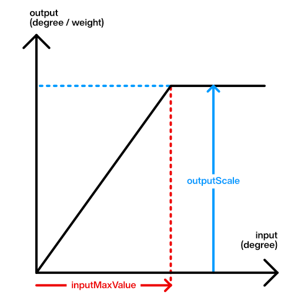

VRMC_vrm.lookAt
This document provides specifications for the lookAt field of theVRMC_vrm extension.
Table of Contents generated with DocToc
- Overview
- Detail
- LookAtType
- LookAt space (offsetFromHeadBone)
- RangeMap
- LookAt algorithm
- Yaw and Pitch in lookAt space
- Apply Yaw and Pitch to bone
- Apply Yaw and Pitch to expression
Overview
LookAt is a component for animating the line of sight into a VRM model.
The line of sight is defined by the LookAt space obtained by offsetting the Head bone in the initial posture.
This document describes yaws and pitches that have positive rotation directions depending on the Euler angles of a right-handed system.
A set of line-of-sights assumes that both eyes are looking in the same direction.For this reason, it is not possible to express that both eyes, such as cross-eyed eyes, face different directions.
Detail
extensions.VRMC_vrm.lookAt = {
"offsetFromHeadBone": [
0,
0.06,
0
],
"rangeMapHorizontalInner": {
"inputMaxValue": 90,
"outputScale": 10
},
"rangeMapHorizontalOuter": {
"inputMaxValue": 90,
"outputScale": 10
},
"rangeMapVerticalDown": {
"inputMaxValue": 90,
"outputScale": 10
},
"rangeMapVerticalUp": {
"inputMaxValue": 90,
"outputScale": 10
},
"type": "bone"
}
| Name | Note |
|---|---|
| type | Bone or Expression |
| offsetFromHeadBone | Offset from head bone to reference position of lookAt (between eyes) |
| rangeMapHorizontalInner | The movable range of horizontal inward direction |
| rangeMapHorizontalOuter | The movable range of horizontal outward direction(Expression's Look Left, Look Right use this) |
| rangeMapVerticalDown | The movable range of vertical downward direction |
| rangeMapVerticalUp | The movable range of vertical upward direction |
LookAtType
The following two types are defined.
| Name | Target | Value |
|---|---|---|
| bone | LocalRotation of Humanoid leftEye bone and rightEye bone | EulerAngles |
| expression | Expression LookAt, LookDown, LookLeft, LookRight | ExpressionWeight |
expression can be MorphTarget, MaterialColor, TextureTransform. LookAt expects the line of sight to be represented primarily by using MorphTarget to move the vertices and TextureTransform to move the offset of the eye texture.
LookAt space (offsetFromHeadBone)
To determine the direction of gaze where the model is looking at an object, We define "LookAt space."
LookAt space is defined as a space relative to a transform in the world. We define the transform by the following:
- The parent of the transform is the head, which follows the head's movement
- The local position of the transform from the head is defined by the property
offsetFromHeadBone - The local rotation of the transform from the head is the inverse of the head's rest rotation in model space
Due to the rest rotation of the head in the model space, the direction of the viewpoint position shift by
offsetFromHeadBonemay not be the same as the axes in the model space. Also, even if the head has a rest rotation in the model space, the forward direction of the sight will match +Z axis in the model space.
In the reference space of the line-of-sight direction, it has the offsetFromHeadBone, which is the local coordinate of thehead bone, as the origin, and has the world reverse rotation of the head bone in the initial posture.
If root has no rotation, it has the same orientation as the world axis.
This document uses glTF's right-handed, Y-Up, and Z-Forward coordinate systems. The positive directions of Yaw and Pitch are as follows.
- Yaw: Z-> X direction => Left
- Pitch: Y-> Z direction => Down
RightHanded
Y Forward
^ Z
| /
|/
X<----+
Left Right
offsetFromHeadBone assumes the position of the HMD for VR.
It can be used to acquire and reflect the position of the first-person viewpoint of the model.
Implementation note: If the model does not have offsetFromHeadBone, it is recommended to fall back to the appropriate value for each implementation.
RangeMap
You can process the line-of-sight values Yaw andPitch evaluated in the LookAt space before applying them to thebone or expression.

| name | function |
|---|---|
| inputMaxValue | The upper limit for Yaw or Pitch. The smaller this value, the greater the movement of the line of sight for the same line of sight. |
| outputScale | Maximum value of bone rotation or Expression Weight. |
Behavior when inputMaxValue is 0
When inputMaxValue is set to 0, it is RECOMMENDED to apply 0 if the line-of-sight value is 0 and apply outputScale otherwise.
Implementation note: This is a specification to avoid division by zero when
inputMaxValueis 0. To achieve behavior close to the above, it is assumed that a procedure such asmax(0.001, inputMaxValue)is performed forinputMaxValue.
Interpretation when type is bone
From the line of sight of yaw,pitch, generate a local rotation for theleftEye and rightEye bones.
There are four categories: horizontal inside, horizontal outside, vertical upper side, and vertical lower side.
The usage of rangeMap on the top, bottom, left, and right is as follows.
+ yaw - + yaw -
^ ^
| |
outer|inner inner|outer
left eye right eye
| leftEye rangeMap | rightEye rangeMap | |
|---|---|---|
| Yaw>0(left) | rangeMapHorizontalOuter | rangeMapHorizontalInner |
| Yaw<0(right) | rangeMapHorizontalInner | rangeMapHorizontalOuter |
| Pitch>0(down) | rangeMapVerticalDown | rangeMapVerticalDown |
| Pitch<0(up) | rangeMapVerticalUp | rangeMapVerticalUp |
The range map is performed for the absolute value of the line-of-sight value.
const boneLocalEulerAngle = min(fabs(value), rangeMap.inputMaxValue)/rangeMap.inputMaxValue * rangeMap.outputScale;
Interpretation when type is expression
Generates weight forlookUp Expression, lookDown Expression,lookLeft Expression, and lookRight Expression.
There are three divisions: horizontal, vertical upper side, andvertical lower side.
Note that there is no distinction between horizontal inside and horizontal outside because both eyes change together in one Expression.
Use rangeMapHorizontalOuter.
| expression | rangeMap | |
|---|---|---|
| Yaw>0(left) | lookLeft | rangeMapHorizontalOuter |
| Yaw<0(right) | lookRight | rangeMapHorizontalOuter |
| Pitch>0(down) | lookDown | rangeMapVerticalDown |
| Pitch<0(up) | lookUp | rangeMapVerticalUp |
The range map is for absolute values.
const expressionWeight = min(fabs(value), rangeMap.inputMaxValue)/rangeMap.inputMaxValue * rangeMap.outputScale;
LookAt algorithm
Yaw and Pitch in lookAt space
public static (float Yaw, float Pitch) CalcYawPitch(this Matrix4x4 lookAtSpace, Vector3 target)
{
var localTarget = lookAtSpace.inverse.MultiplyPoint(target);
var z = Vector3.Dot(localPosition, Vector3.forward);
var x = Vector3.Dot(localPosition, Vector3.right);
var yaw = (float)Math.Atan2(x, z) * Mathf.Rad2Deg;
// x+y z plane
var xz = Mathf.sqrt(x * x + z * z);
var y = Vector3.Dot(localPosition, Vector3.up);
var pitch = (float)Math.Atan2(-y, xz) * Mathf.Rad2Deg;
return (yaw, pitch);
}
Apply Yaw and Pitch to bone
function applyLeftEyeBone(vrm, yawDegrees, pitchDegrees)
{
var yaw = 0;
if(yawDegrees>0)
{
// left => outer
yaw = min(fabs(yawDegrees), rangeMapHorizontalOuter.inputMaxValue) / rangeMapHorizontalOuter.inputMaxValue * rangeMapHorizontalOuter.outputScale;
}
else{
// right => inner
yaw = -min(fabs(yawDegrees), rangeMapHorizontalInner.inputMaxValue) / rangeMapHorizontalInner.inputMaxValue * rangeMapHorizontalInner.outputScale;
}
var pitch = 0;
if(pitchDegrees>0)
{
// down
pitch = min(fabs(pitchDegrees), rangeMapVerticalDown.inputMaxValue) / rangeMapVerticalDown.inputMaxValue * rangeMapVerticalDown.outScale;
}
else{
// up
pitch = -min(fabs(pitchDegrees), rangeMapVerticalUp.inputMaxValue) / rangeMapVerticalUp.inputmaxValue * rangeMapVerticalUp.outScale;
}
vrm.humanoid.leftEye.localRotation = Quaternion.from_YXZEuler(yaw, pitch, 0);
}
function applyRightEyeBone(vrm, yawDegrees, pitchDegrees)
{
var yaw = 0;
if(yawDegrees>0)
{
// left => inner
yaw = min(fabs(yawDegrees), rangeMapHorizontalInner.inputMaxValue) / rangeMapHorizontalInner.inputMaxValue * rangeMapHorizontalInner.outputScale;
}
else{
// right => outer
yaw = -min(fabs(yawDegrees), rangeMapHorizontalOuter.inputMaxValue) / rangeMapHorizontalOuter.inputMaxValue * rangeMapHorizontalOuter.outputScale;
}
var pitch = 0;
if(pitchDegrees>0)
{
// down
pitch = min(fabs(pitchDegrees), rangeMapVerticalDown.inputMaxValue) / rangeMapVerticalDown.inputMaxValue * rangeMapVerticalDown.outScale;
}
else{
// up
pitch = -min(fabs(pitchDegrees), rangeMapVerticalUp.inputMaxValue) / rangeMapVerticalUp.inputmaxValue * rangeMapVerticalUp.outScale;
}
vrm.humanoid.rightEye.localRotation = Quaternion.from_YXZEuler(yaw, pitch, 0);
}
Apply Yaw and Pitch to expression
function applyExpression(vrm, yawDegrees, pitchDegrees)
{
// horizontal
if(yawDegrees>0)
{
// left
const yawWeight = min(fabs(yawDegrees), rangeMapHorizontalOuter.inputMaxValue)/rangeMapHorizontalOuter.inputMaxValue * rangeMapHorizontalOuter.outputScale;
vrm.expression.setWeight(LOOK_LEFT, yawWeight);
vrm.expression.setWeight(LOOK_RIGHT, 0);
}
else{
// right
const yawWeight = min(fabs(yawDegrees), rangeMapHorizontalOuter.inputMaxValue)/rangeMapHorizontalOuter.inputMaxValue * rangeMapHorizontalOuter.outputScale;
vrm.expression.setWeight(LOOK_LEFT, 0);
vrm.expression.setWeight(LOOK_RIGHT, yawWeight);
}
// vertical
if(pitchDegrees>0)
{
// down
const pitchWeight = min(fabs(pitchDegrees), rangeMapVerticalDown.inputMaxValue)/rangeMapVerticalDown.inputMaxValue * rangeMapVerticalDown.outputScale;
vrm.expression.setWeight(LOOK_DOWN, pitchWeight);
vrm.expression.setWeight(LOOK_UP, 0);
}
else{
// up
const pitchWeight = min(fabs(pitchDegrees), rangeMapVerticalUp.inputMaxValue)/rangeMapVerticalUp.inputMaxValue * rangeMapVerticalUp.outputScale;
vrm.expression.setWeight(LOOK_DOWN, 0);
vrm.expression.setWeight(LOOK_UP, pitchWeight);
}
}